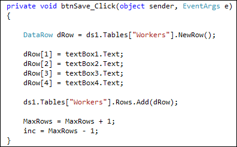
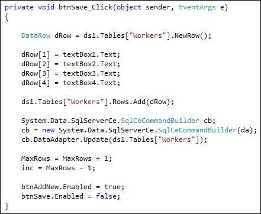
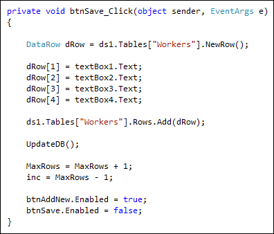
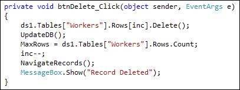
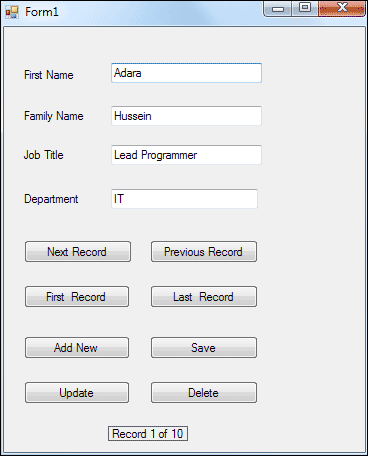

Add, Update, Delete a Record
When you add a new record, you'll want to add it to the Dataset and the underlying database. Let's see how.
Add two new buttons to the form. Set the following properties for your buttons:
Name: btnAddNew
Text: Add New
Name: btnSave
Text: Save
The Add New button won't actually add a new record. The only thing it will do is to clear the text boxes, ready for a new record to be added. The Save button is where we'll add the record to the Dataset and to the Database.
Double click your Add New button, and add code to clear the text boxes:
textBox1.Clear();
textBox2.Clear();
textBox3.Clear();
textBox4.Clear();
That's all we need to do here. You can test it out, if you want. But all the code does is to clear the four text boxes of text. The user can then enter a new record.
After a new record has been entered into the text boxes, we can Save it. So double click your Save button to get at the code.
To save a record, you need to do two things: save it to the Dataset, and save it to the underlying database. You need to do it this way because the Dataset with its copy of the records is disconnected from the database. Saving to the Dataset is NOT the same as saving to the database.
To add a record to the Dataset, you need to create a new Row:
DataRow dRow = ds1.Tables["Workers"].NewRow();
This creates a New DataRow called dRow. But the Row will not have any data. To add data to the row, the format is this:
dRow[1] = textBox1.Text;
So after your DataRow variable (dRow) you need a pair of square brackets. In between the square brackets type its position in the Row. This is the Column number. dRow[1] refers to the first_name column, for us. After an equals sign, you type whatever it is you want to add to that Column - the text from textBox1, in our case.
Finally, you issue the Add command:
ds1.Tables["Workers"].Rows.Add( dRow );
After Add, and in between a pair of round brackets, you type the name of the Row you want to add, which was dRow in our example. The new Row will then get added to the end of the Dataset.
So add this code to your Save button:

Notice the last two lines:
MaxRows = MaxRows + 1;
inc = MaxRows - 1;
Because we have added a new Row to the Dataset, we also need to add 1 to the MaxRows variable. The inc variable can be set to the last record in the Dataset.
Try it out. When you start your programme, click the Add New button to clear the text boxes. Enter a new record in the blank text boxes and then click your Save button. Click your Previous and Next buttons. You'll see that the new record appears.
(Obviously, you'll want to add error checking code to check that the Save button is not clicked before the Add button. Or simply set the Enabled property to false for the Save button when the form loads. You can then set Enabled to true in your Add button.)
If you close the programme down, and start it back up again you'll find that the new record has disappeared! It's disappeared because we haven't yet added it to the underlying database. We've only added it to the Dataset.
To add a new record to the Database, you need to use something called a Command Builder. You use the Command Builder in conjunction with a DataAdapter. This has an Update method that will do the job for you. The only thing you need to do is tell it which Dataset and table holds all the records. Let's see how.
Add the following line to your Save button: (Add it after ds1.Tables but before the MaxRows line)
System.Data.SqlServerCe.SqlCeCommandBuilder cb;
This sets up a SqlCeCommandBuilder variable. We've called it cb. Next, you can create an object from your variable:
cb = new System.Data.SqlServerCe.SqlCeCommandBuilder( da );
Notice that the SqlCeCommandBuilder now has a pair of round brackets. In between the round brackets you type the name of a DataAdapter. We set one up at the top of the code called da, so we can use this.
The Command Builder has its own DataAdapter, which in turn has an Update method. The next line to add, therefore, is this:
cb.DataAdapter.Update( ds1.Tables["Workers"] );
In between the round brackets of update, you need a dataset. You then refer to the table associated with the dataset. For us this was ds1.Tables["Workers"].
Your code for the Save button, then, should look like this:

Notice that we've disabled the Save button but enabled the AddNew button. We did the reverse with the AddNew button:
textBox1.Clear();
textBox2.Clear();
textBox3.Clear();
textBox4.Clear();
btnAddNew.Enabled = false;
btnSave.Enabled = true;
You can try your programme out, now. Click your Add New button and add a new record. Click the Save button. When you close the programme down and reopen it, the new record should be there.
Update a Record
Sometimes, all you want to do is to update a record in the database. This is very similar to Adding a new record. Examine the following code:

The first thing to notice is that we've set up a method called UpdateDB. This has all the code for the Command Builder and is doing the actual updating. We can then remove this same code from the Save button:

Notice the call to our new method:
UpdateDB( );
For the Update button, the first line of the code is this:
= ds1.Tables["Workers"].Rows[inc];
The only thing you're not doing is adding a new Row. After creating a new Row called dRow2, we set it to the current Row, using our inc variable. Whatever is in the text boxes then gets transferred to dRow2[1], dRow2[2], dRow2[3] and dRow2[4]. These are the Columns in the Row.
When you run your form again, amend one of your records. Close down the form and open it back up again. You should find that your amendments are still there.
Delete a Record
To delete a record from the Dataset, you use the Delete method:
ds1.Tables["Workers"].Rows[inc].Delete( );
This is enough to Delete the entire Row ( Rows[inc] ). But it is only deleted from the Dataset. Here's the code to delete the record from the database, as well:

After the Delete( ) line, we make a call to our UpdateDB method again. This will commit the changes to the database. Because we've deleted a record, we need to reset the MaxRows count, because it will be one less. We also need to deduct one from the inc variable. After this, we can make a call to NavigateRecords. The final line just displays a message that the record was deleted.
Exercise P
Examine this version of our form:

If you look at the bottom, you'll see a label that says "Record 1 of 10". Implement this in your own programme. If you set up a method, you can just call it when the form loads, and again from NavigateRecords.
In the next lesson, you'll learn how to find a record.